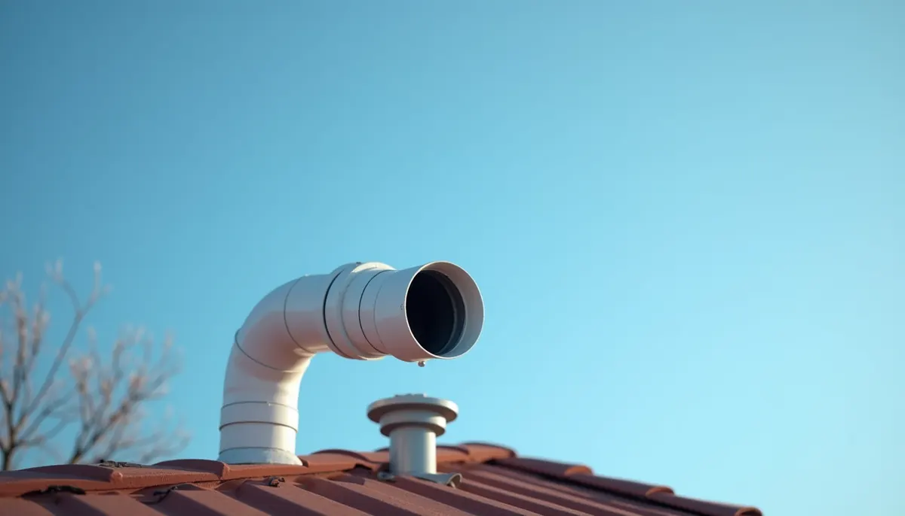
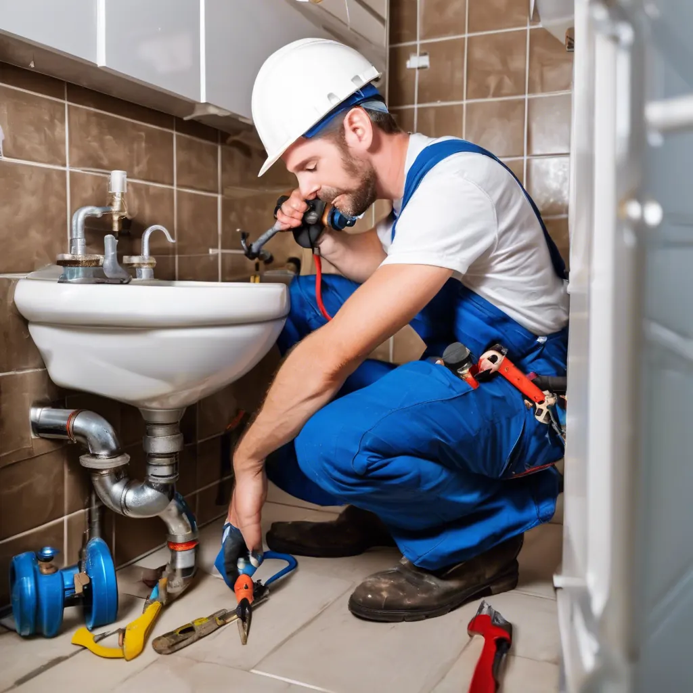
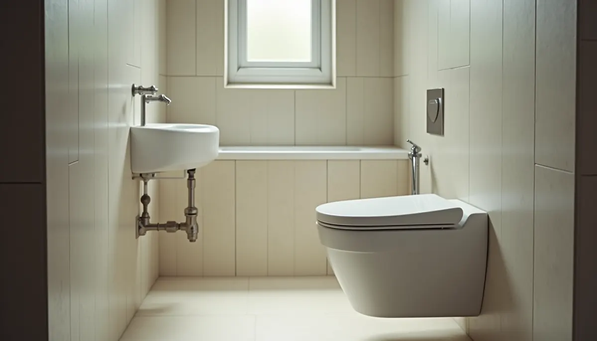

Have you ever noticed that satisfying sound when your toilet flushes or when water swiftly drains from your sink? It's not just gravity at work—it's the vital function of a well-vented plumbing system. Despite being hidden from view, your plumbing vent plays a critical role in your home's drainage. Understanding its importance can save you from frustrating and costly issues down the line.
What Exactly is a Plumbing Vent?
Think of your plumbing system as a large straw. When you sip a drink through a straw, you create a vacuum that pulls the liquid up. In a similar manner, when water flows down your drains, it creates a vacuum that needs to be alleviated for efficient drainage. A plumbing vent is a pipe that rises from your drainage system, usually extending through your roof, allowing air to enter the pipes. This air pressure is essential to maintain steady and efficient drainage throughout your system.
The Problems of Improper Venting
When your plumbing isn’t vented correctly, or if a vent is blocked, your system can’t function properly. This can lead to a range of annoying and expensive issues:
Slow Drains and Clogs
Without sufficient air to balance pressure, water can struggle to flow down the pipes. This can cause significant slowdowns in drainage, making it easier for hair, soap scum, and food debris to build up and contribute to clogs. In fact, about 50% of plumbing problems stem from poor drainage. Regular venting can drastically reduce these instances.
Gurgling Sounds
Gurgling noises often signal a problem. When air is pulled through the P-trap (the curved pipe beneath your sink) as water flows, it indicates that the vent is blocked or incorrectly installed. If you hear this sound, it’s time to investigate further.
Foul Odors
The P-trap is designed to hold water, creating a seal that blocks sewer gases from entering your home. However, if the vent isn't functioning properly, the vacuum can siphon the water out of the P-trap. This allows unpleasant and hazardous sewer gases to enter your living environment. In homes without effective sewer seals, unpleasant smells can increase by 30% or more.
Toilets That Won't Flush Properly
A blocked toilet vent can lead to problems like the water level dropping in the bowl after each flush. This might require excessive flushing and can waste significant amounts of water, increasing your utility bill. According to studies, households facing these issues can see a 25% rise in their water usage costs.
The Benefits of Proper Venting
Now that we have explored the issues tied to poor venting, let’s highlight the advantages of maintaining a well-vented plumbing system.
Efficient Drainage
When your system is properly vented, drainage flows smoothly. This efficiency can significantly reduce the likelihood of clogs and the need for costly repairs. By ensuring adequate venting, many homeowners have reported that they experience up to 40% fewer plumbing repairs.
Improved Air Quality
Effective venting keeps sewer gases where they belong—out of your home. This can greatly enhance your home’s indoor air quality, safeguarding the health of your family. This is crucial for households with young children, older adults, or individuals with respiratory issues, where poor air quality can exacerbate health problems.
Longevity of Plumbing Fixtures
A properly functioning plumbing system not only reduces clogs but also lessens wear and tear on your plumbing fixtures. Toilets, sinks, and other components can last longer, saving you money on replacements. Well-maintained plumbing can often lead to an extension of fixture lifespans by up to 50%.
How to Ensure Proper Venting
To keep your plumbing system in good shape, follow these tips to ensure your vents are functioning correctly:
Regular Inspections
Organize inspections by Angle Stop Plumbing of your plumbing system to identify signs of blockages or damage regularly. Catching issues early can save you financial headaches down the road. A proactive approach can prevent minor problems from becoming substantial repairs.
Clear Debris
Check your roof and gutters for debris that could obstruct your plumbing vents. Things like leaves, snow, and twigs can accumulate and block airflow. Keeping these areas clear can prevent significant issues from developing.
Consult a Professional
If you notice persistent plumbing problems, consider reaching out to Angle Stop Plumbing. Skilled plumbers can evaluate your system for any necessary repairs or upgrades to maintain proper venting.
Final Thoughts
Understanding the importance of proper plumbing venting is essential for a healthy, efficient drainage system in your home. By being proactive in maintaining your plumbing vents, you can avert a range of frustrating problems. Consider these tips as vital steps to keep your home's plumbing system running smoothly. Treat your plumbing vent well, and it will protect your home for many years.


